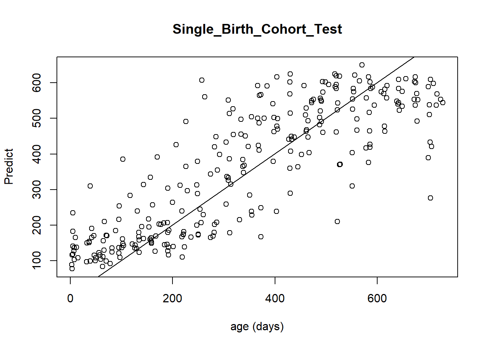
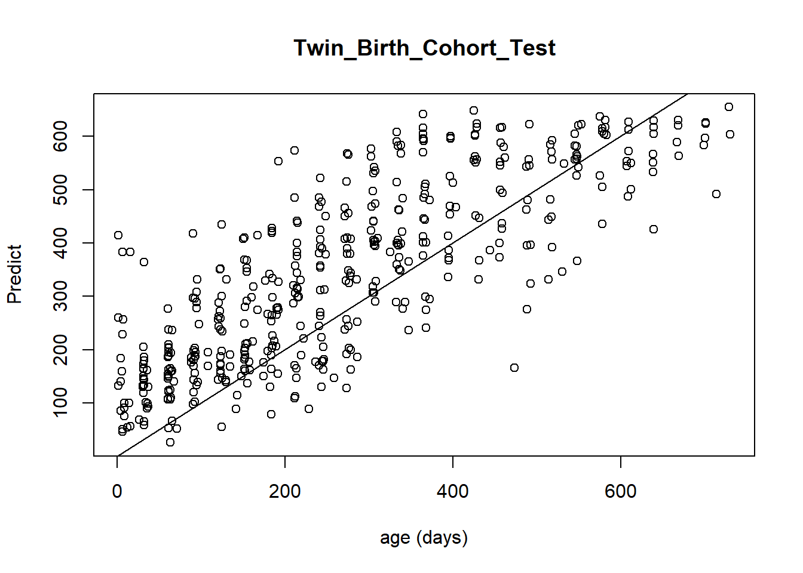

Chapter 3 随机森林模型
3.1 随机森林原理
随机森林是集成学习中的Bagging（Bootstrap AGgregation）方法，其由多个决策树组成，当我们进行分类任务时，新的输入样本进入，就让森林中的每一棵决策树分别进行判断和分类，每个决策树会得到一个自己的分类结果，决策树的分类结果中哪一个分类最多，那么随机森林就会把这个结果当做最终的结果。关于随机森林的原理，可以参看博文等。
随机森林模型可以用于分类任务和回归任务中，下图展示了随机森林的基本回归原理：
随机森林回归的预测结果是由内部所有二叉决策树的预测结果取平均值得到的。二叉决策树的预测过程主要分为以下步骤：
- 针对某一输入样本，从二叉决策树的根节点起，判断当前节点是否为叶子节点，如果是则返回叶子节点的预测值(即当前叶子中样本目标变量的平均值），如果不是则进入下一步
- 根据当前节点的切分变量的和切分值，将样本中对应变量的值与节点的切分值对比。如果样本变量值小于等于当前节点切分值，则访问当前节点的左子节点；如果样本变量值大于当前节点切分值，则访问当前节点的右子节点
- 循环步骤2，直到访问到叶子节点，并返回叶子节点的预测

3.2 随机森林变量importance
在随机森林模型中，每一个变量都有自己的importance score，这个importance score是该变量对于决策树预测的力度来决定的，在一个模型中，单个变量在树的最上侧，则该变量对于预测的影响程度越大，一般这种变量会大大减少预测结果的熵，对单个样本的预测具有十分重要的作用。
在大部分的随机森林模型中，总是会先对变量进行重要性评估，然后再挑选出部分最重要的变量来作为最终的模型预测结果。这种思路我们会在之后的分析中展示。
3.3 幼儿微生物随机森林回归
关于随机森林的源代码在GitHub上。
我们的假设是，幼儿的肠道微生物组成能够代表幼儿的年龄。多种微生物作为变量，可以对最终的年龄进行回归。
我们首先将ASV的丰度进行标准化，转换为相对丰度。文件放置于asv_realtive_abundance.txt。其次是样本的metadata和每一个ASV对应的物种分类信息.
3.4 数据预览
原文：Persistent Gut Microbiota Immaturity in Malnourished Bangladeshi Children
数据从ENA中进行下载，数据号PRJEB5482,下载数据共2811个样本，其中部分数据采取不同的run测序，根据样本id将数据合并，一共得到1949个样本。
其中健康婴儿的样本数目共996个，包含有Healthy Singleton Birth Cohort,Healthy Twins & Triplets两类。在本文的分析中，首先使用12个孩子(包含272个16S样本)来训练随机森林模型，然后再分别在13个Singleton 孩子(276个16S样本)和25个Twins & Triplets孩子（447）个样本中进行随机森林模型的验证计算。
基本统计见下表：
| Accession Numer：PRJEB5482 | 数据类型 | 数据用途 | Child Number | Sample Number |
|---|---|---|---|---|
| Country：Bangladesh | Singleton | Training | 12 | 272 |
| Child Type:Healthy | Singleton | Validation | 13 | 276 |
| Total Samples:996 | Twins & Triplets | Validation | 25 | 448 |
3.5 分析代码解析
rm(list=ls())
library(randomForest)
library(dplyr)
#读入ASV丰度
asv_abundance <- read.table("asv_realtive_abundance.txt",header=T,sep="\t")
## 过滤ASV
## 创建函数来计算符合相对丰度>0.1%的ASV个数
count <- function(abun){
num <- sum(abun>0.1)
return(num)
}
filter_count <- apply(asv_abundance,1,count)
index <- which(filter_count>2) # 获取符合条件的ASV索引
filter_abundance <- asv_abundance[index,]
## 读入metadata数据并合并数据
metadata <- read.table("healthy_metadata.txt",header=T,sep="\t",row.names=1)
otu <- data.frame(t(filter_abundance))
otu$age_day <- metadata[rownames(otu),]$age_day
# 训练集和测试集
train_sample <- otu[rownames(metadata)[which(metadata$Type=="Training")],]
valid_sample <- otu[rownames(metadata)[which(metadata$Type=="Validation")],]
set.seed(123) # 创建随机种子，从而使得结果可重复
otu_train.forest <- randomForest(age_day~., data = train_sample, importance = TRUE) ## 开始训练当前的模型是以所有的ASV作为预测变量，我们查看一下当前的性能。
##
## Call:
## randomForest(formula = age_day ~ ., data = train_sample, importance = TRUE)
## Type of random forest: regression
## Number of trees: 500
## No. of variables tried at each split: 201
##
## Mean of squared residuals: 16052.08
## % Var explained: 64.26使用605个ASVs作为特征输入，对文中的chronologic age进行回归，chronologic age使用的数据为婴儿的出生天数。 结果显示，使用所有的ASV作为输入的时候能够解释64.26%的variance，而原文为73%。考虑到实际只有部分ASV可以作为变量解释，过多的变量会影响模型，我们从上述训练模型获取每个变量的importance score.
3.5.1 查看importance score
importance_otu <- data.frame(otu_train.forest$importance)
# 下面的绘图代码结果见下图
#varImpPlot(otu_train.forest, n.var = min(30, nrow(otu_train.forest$importance)),
#main = 'Top 30 - variable importance')
3.5.2 获取最佳变量个数
这里有两个变量：
%IncMSE：increase in mean squared error，通过对每一个预测变量随机赋值，如果该预测变量更为重要，那么其值被随机替换后模型预测的误差会增大。因此，该值越大表示该变量的重要性越大
IncNodePurity：increase in node purity，通过残差平方和来度量，代表了每个变量对分类树每个节点上观测值的异质性的影响，从而比较变量的重要性。该值越大表示该变量的重要性越大。
我们使用IncNodePurity来衡量importance score，并通过十折交叉验证筛选变量.
3.5.3 查看不同变量个数下的模型误差
otu_train <- train_sample
set.seed(123)
otu_train.cv <- replicate(10, rfcv(otu_train[-ncol(otu_train)], otu_train$age_day, cv.fold = 10, step = 1.5), simplify = FALSE)
otu_train.cv
otu_train.cv <- data.frame(sapply(otu_train.cv, '[[', 'error.cv'))
otu_train.cv$otus <- rownames(otu_train.cv)
otu_train.cv <- reshape2::melt(otu_train.cv, id = 'otus')
otu_train.cv$otus <- as.numeric(as.character(otu_train.cv$otus))
otu_train.cv.mean <- aggregate(otu_train.cv$value, by = list(otu_train.cv$otus), FUN = mean)3.5.4 查看结果
#head(otu_train.cv.mean, 10)
#拟合线图
library(ggplot2)
ggplot(otu_train.cv.mean, aes(Group.1, x)) +
geom_line() +
theme(panel.grid = element_blank(), panel.background = element_rect(color = 'black', fill = 'transparent')) +
labs(title = '',x = 'Number of OTUs', y = 'Cross-validation error')十折交叉验证的结果表明，当变量数在16-24时，模型误差开始减慢减少速度，在24-35的时候基本减少的误差很小甚至开始增加。所以我们可以认为，该模型筛选的变量数目和原文比较一致，在ASV变量数目为24时，达到了最好的回归效果。所以只需要保留Top24 importance score的ASVs作为预测变量即可。
3.5.5 24个变量的简约回归
importance_otu.select <- importance_otu[1:24, ]
otu_id.select <- rownames(importance_otu.select)
#write.table(importance_otu.select, 'importance_otu.select.txt', sep = '\t', col.names = NA, quote = FALSE)
##只包含 24 个重要预测变量的简约回归
otu_train.select <- train_sample[,c(otu_id.select,"age_day")]
otu_test.select <- valid_sample[,c(otu_id.select,"age_day")]
#随机森林计算（默认生成 500 棵决策树），详情 ?randomForest
set.seed(123)
otu_train.select.forest <- randomForest(age_day~., data = otu_train.select, importance = TRUE)查看这24个变量的回归性能：
##
## Call:
## randomForest(formula = age_day ~ ., data = otu_train.select, importance = TRUE)
## Type of random forest: regression
## Number of trees: 500
## No. of variables tried at each split: 8
##
## Mean of squared residuals: 15775.65
## % Var explained: 64.88上述结果表明，当预测变量数目为24时，达到了比所有ASVs作为预测变量更好的变量解释程度：64.88
接下来我们使用测试集数目进行评分，测试集数目分为Singleton和Twins & Triplets数据.
3.5.6 Singleton预测结果
names <- rownames(otu_test.select)
single_test <- otu_test.select[which(grepl(names,pattern="Bgs")==TRUE),]
twin_test <- otu_test.select[which(grepl(names,pattern="Bgt")==TRUE),]
age_predict_single <- predict(otu_train.select.forest, single_test)
plot(single_test$age_day, age_predict_single, main = 'Single_Birth_Cohort_Test',xlab = 'age (days)', ylab = 'Predict')
abline(1, 1)
Single_data <- data.frame(single_test$age_day, age_predict_single)
Single_Fit <- lm(age_predict_single~single_test.age_day,data=Single_data)
summary(Single_Fit)##
## Call:
## lm(formula = age_predict_single ~ single_test.age_day, data = Single_data)
##
## Residuals:
## Min 1Q Median 3Q Max
## -340.61 -66.55 -1.79 64.17 308.49
##
## Coefficients:
## Estimate Std. Error t value Pr(>|t|)
## (Intercept) 115.47437 11.21453 10.30 <2e-16 ***
## single_test.age_day 0.71214 0.02805 25.39 <2e-16 ***
## ---
## Signif. codes: 0 '***' 0.001 '**' 0.01 '*' 0.05 '.' 0.1 ' ' 1
##
## Residual standard error: 97.4 on 274 degrees of freedom
## Multiple R-squared: 0.7017, Adjusted R-squared: 0.7006
## F-statistic: 644.5 on 1 and 274 DF, p-value: < 2.2e-163.5.7 Twins & Triplets预测结果
age_predict_twin <- predict(otu_train.select.forest, twin_test)
plot(twin_test$age_day, age_predict_twin, main = 'Twin_Birth_Cohort_Test',xlab = 'age (days)', ylab = 'Predict')
abline(1, 1)
Twin_data <- data.frame(twin_test$age_day, age_predict_twin)
Twin_Fit <- lm(age_predict_twin~twin_test.age_day,data=Twin_data)
summary(Twin_Fit)##
## Call:
## lm(formula = age_predict_twin ~ twin_test.age_day, data = Twin_data)
##
## Residuals:
## Min 1Q Median 3Q Max
## -326.82 -69.89 -7.75 63.92 277.00
##
## Coefficients:
## Estimate Std. Error t value Pr(>|t|)
## (Intercept) 138.48008 8.50261 16.29 <2e-16 ***
## twin_test.age_day 0.74909 0.02631 28.47 <2e-16 ***
## ---
## Signif. codes: 0 '***' 0.001 '**' 0.01 '*' 0.05 '.' 0.1 ' ' 1
##
## Residual standard error: 100.3 on 446 degrees of freedom
## Multiple R-squared: 0.645, Adjusted R-squared: 0.6442
## F-statistic: 810.4 on 1 and 446 DF, p-value: < 2.2e-16上述结果表明：
在Singleton和Twins & Triplets的预测结果和原始的结果拟合，拟合R^2分别为0.7006和0.6442
| Taxa Number | 变量解释 | 测试集Singleton拟合R^2 | 测试集多胞胎拟合R^2 | |
|---|---|---|---|---|
| 原文 | 24 | unknown | 0.71 | 0.68 |
| 复现 | 24 | 64.88 | 0.7006 | 0.6442 |
看一下这个OTU是什么：
# write.table(importance_otu.select,"Selected_OTUs.txt",sep="\t",quote=F)
# 需要对importance_otu.select表格中的"X"替换掉
taxa <- read.table("taxonomy.txt",sep="\t",header=T)
ASV <- read.table("Selected_OTUs.txt",header=T,sep="\t")
ASV_infomation <- inner_join(taxa,ASV,by="ASV")
show_info <- ASV_infomation[,c(1,2)]
show_info[,2]